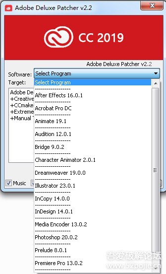
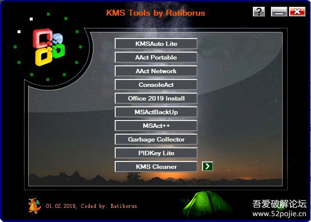

套装书目
《少有人走的路1：心智成熟的旅程》
《少有人走的路2：勇敢地面对谎言》
《少有人走的路3：与心灵对话》
《少有人走的路4：在焦虑的年代获得精神的成长》
在南非金矿股票1895年历史性崩盘的前夕，很多经纪人都预感到必须把手中的股票尽快脱手。英国经纪人贝特就是其中一位。
贝特的计划是这样开始的：首先，他给住在汉堡的母亲寄了一个装有金矿股票的包裹。
他还给母亲写信说，包裹里的股票将要上涨10倍，但是，他母亲绝对不能打开包裹看看到底是什么股票。
必须一直保守这个秘密，因为他自己还想在价格较低时再买一些。

百度云链接：
提取码：8r79
KMS Tools Portable是一款激活windows和office的软件，这款软件集合了Ratiborus制作的其他几个软件。相当的实用，且安全便携无毒。可以激活最新的WIN10 、WIN8全系列、WIN7 Office2016、Visio2016、Project2016、OFFICE2013、VISO2013 等等一系列的产品。KMS Tools激活工具由老外@Ratiborus,MSFree Inc.编写。KMSAuto Net，原生单执行文件，可选多种方式安装KMS服务以及创建计划任务自动续期！KMS Tools激活工具不仅能激活Win10，还支持Win7、Win8、Win2008/2012/R2、Office2013、Office2016等全系列产品的激活，同时附带了Office2016安装、激活密钥检测工具、激活密钥备份及清除等功能，可谓是系统安装必备工具。
Windows/Office全激活工具KMS Tools 20190201 Portable
百度云链接：
提取码：oggk

在我小的时候，人们说，生活艰难是懒惰造成的。长大后，人们又说，生活艰难是时代造成的。再大一点，人们又说生活艰难在于原生家庭。现在，人们又说，生活艰难源自出生寒门。我自己有一段时间，认为生活艰难是由于自己太过善良。